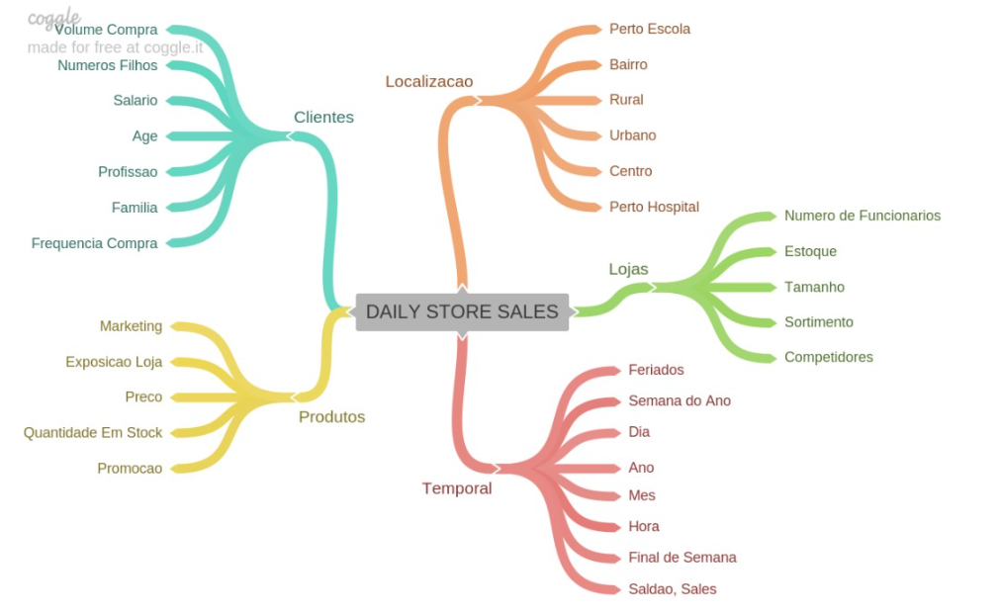
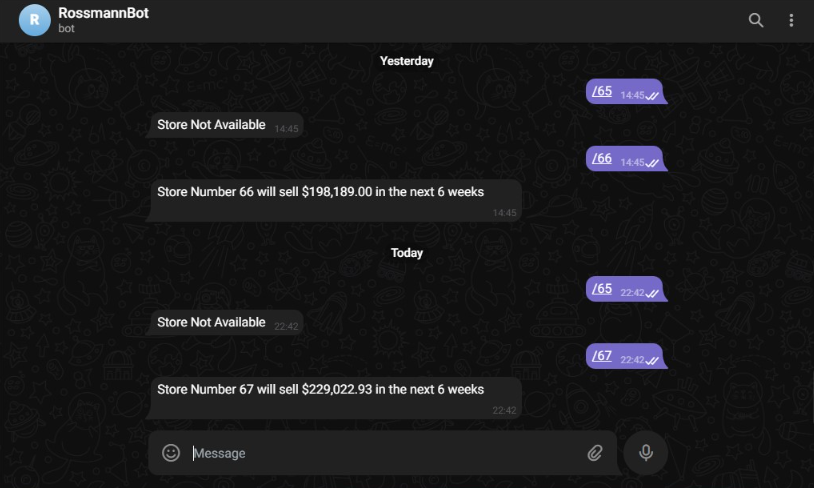

Rossmann pharmacy chain

Business Problem
Rossmann is a large pharmacy chain that operates in more than 7 European countries with more than 3000 stores. Sales are influenced by several factors such as: distance from the competitor, school and state holidays, location, type of store, etc.
Based on historical store sales data, the CFO intends to make a sales forecast for the next 6 weeks. To solve the problem, I will process the data and train an ML (Machine Learning) model that can make a forecast for the next 6 weeks based on the store number given to him.
Data Source
For this case study, the data was taken from the Kaggle website.
Kaggle is a renowned website where several companies promote competitions, making their data publicly available and rewarding the teams that come up with the best solutions.
Below I provide the link from where the data was taken, remembering that it is also found in the "data" folder from github.
Go to data sourceTool Used
Programming language: Python
Method and problem resolution
To solve this problem, I used the cyclical method. The cyclical method is an iterative method consisting of several steps that are repeated and improved upon with each iteration to gradually enhance the problem's resolution. The cyclical method prioritizes rapid delivery, and after each cycle, it allows for the improvement of results and metrics of the ML model, for example. The steps to solve the problem were as follows:
- 1.0 - Data Description
- 2.0 - Variable Filtering
- 3.0 - Variable Filtering
- 4.0 - Exploratory Data Analysis
- 5.0 - Data Preparation
- 6.0 - Feature Selection
- 7.0 - Machine Learning Modeling
- 8.0 - Hyperparameters Fine Tuning
- 9.0 - Error Translation and Interpretation
- 10 - Deployment
I will go into details about each of the above steps further below.
Step 1: Data Description
In a tabular dataset (data in table format), each column represents a phenomenon, and each row represents information about that phenomenon. Therefore, it's important that the columns have intuitive names to make it easier to understand what each observation is trying to convey. The Rossmann dataset has the following columns, which I will refer to as features from now on.
- store - unique identifier for the store
- day_of_week - day of the week in integer numbers
- date - the date on which the sale was made
- sales - value of sales on a given day
- customers - number of customers on a given day
- open - indicator if the store was open or closed 0 = closed, 1 = open
- promo - Indicates if the store had a promotion on that day
- state_holiday - Indicates if it was a state holiday. Generally, stores close on state holidays. Contains: a = public holiday, b = Easter holiday, c = Christmas, 0 = None
- school_holiday - Indicates if the store was affected by the closure of school holidays on that day.
- store_type - type of stores, can be: a, b, c, d
- assortment - describes the store's assortment level: a = basic, b = extra, c = extended
- competition_distance - distance in meters to the nearest competitor.
- competition_open_since_month - shows the month in which the nearest competitor opened.
- competition_open_since_year - shows the year in which the nearest competitor opened.
- promo2 - shows if the store had an extended promotion on that day of sale. Contains: 0 = store is not participating, 1 = store is participating
- promo2_since_week - the week in which the store started participating in promo2
- promo2_since_year - the year the store participated in promo2.
- promo_interval - shows the consecutive months in which the store participated in promo2. For example: "Feb,May,Aug,Nov" means that the store participated in promo2 in the months of February, May, August, and November of that year.
Step 2: Feature Engineering
The feature engineering stage involves creating new features (columns) from the original dataset or combining them with another dataset. For instance, it is pretty common to extract from a date as a feature "Year", "Month", "Day" through a date in the format 'yyyy-mm-dd' and then perform other analyses with lower granularities or to build tables grouped by Year/Month/Day.
Below are some features that can be extracted from the original dataset or by combining it with other data sources.

In this project, temporal features were extracted, and some categorical features (columns containing text data) were adjusted. Additionally, at this stage, some hypotheses were raised that I will validate with the data and analyses (more details in the rossmann_sales.ipynb notebook).
Step 3: Variable Filtering
In this stage, I prepared the dataset format with the columns and rows that I will use to train the ML model. It essentially consists of filtering out and removing rows and columns that are not relevant at the time of prediction. In the rows, I only left the stores that are open and removed the 'customers' feature along with other derived features. The reason for removing the 'customers' feature (as mentioned above, it indicates the number of customers inside the store on that day) is because, at the time of prediction, I cannot specify how many customers are in that store.
Step 4: Exploratory Data Analysis
In this stage of exploratory data analysis, I examined the data through univariate, bivariate, and multivariate analysis.
Univariate Analysis
In the univariate analysis, my interest was to observe the distribution of the dataset's features and their characteristics without considering other correlated variables. This is important because it helps us answer questions such as: What is the average value of the feature? What are the minimum and maximum values? What type of distribution do I find in the feature? Are there outliers?
Bivariate Analysis
In Bivariate analysis, as the name suggests, my interest was to see if there was any relationship or behavior between the features and the response variable. First I raised some hypotheses and responded using the relationship between features. For example, to answer the hypothesis: "Should stores with larger assortments sell more?" I related the feture "assortment" and "sales" and observed if there was any behavior between the features.
As analyzed, the hypothesis is false, that is, stores with a "basic" assortment sell more

Multivarite Analysis
In the multivariate analysis, a Pearson clarification method was applied to check whether there were correlations between the numerical variables. To check the brightness between categorical variables (characteristics that contain text) Cramer's V was used (more details in jupyter noteboook)
Step 5: Data Preparation
The learning of most Machine Learning algorithms is facilitated by numerical data and on the same scale, it is important that the data have the same scale as many algorithms tend to give greater importance to features that have a greater range, thus biasing the model. With this in mind, the steps applied were:
Normalization
It is used to bring the data to the same range. In normalization, rescaling is done with the center to 0 and the standard deviation to 1. The standard deviation in a simplified way is how far a given value is from the mean. For example, if I have an average of 100 meters in the "competition_distance" feature and consider a standard deviation of 20, my range is 100 + or - 20 (so it can go from 80 to 120). When I do normalization the scale becomes with the center 0 + or - 1. Normalization works well for normal distributions, in this case as I don't have normal distributions, I decided not to use normalization.
Normalization is given by the formula below:

Where:
- xi = a single data in column
- μ: average
- σ: standard deviation
Basically, the average of the data in a feature (or dataset column) is calculated and for each piece of data, I subtract the average and divide it by the standard deviation. This will change the scale of my feature.
Rescaling
Rescaling is the rescaling done for features that do not have normal distributions. Rescaling is done for the range between 0 and 1. For rescaling I used the RobustScaler method which works well for features that contain outliers, and the MinMaxScaler which works well for features without outliers.
Transformation
- Encondig: Conversion of categorical features to numerical features. For encoding I used the pandas pd.getdummies() method. The getdummies method is used for feturues that have few unique values, as it takes the value of the row, transforms it into a column and marks 0 for false and 1 for true depending on whether that data exists or not in that row, for this reason it is recommended use for features with up to a maximum of 5 unique values within the column, to avoid creating numerous columns within the dataset.
- Nature Transformation": Used in cyclical variables that are repeated. For example, the year has a cyclical behavior, as every 12 months there is 1 year again.
Step 6: Feature Selection
In this step, I will choose the features that will be used to train the model. An algorithm called Boruta was used to choose the most important features. Boruta's suggestion is made by passing a Machine Learning model as a parameter. It is worth mentioning that Boruta only makes a suggestion, it is up to the analyst to validate the suggestion or not. In my case, other features were added that were also considered important by me during STAGE 4: Exploratory Data Analysis.
Step 7: Machine Learning Modelling
After selecting the features, I divide the data into test and training. I considered the training data to be the entire dataset except the last 6 weeks, which were separated and stored as test data.
From there, some models were trained:
- Average Model
- Linear Regression Model
- Linear Regression Regularized Model - Lasso
- Random Forest Regressor
- XGBoost Regressor
Errors
To evaluate the model's performance, the following errors were used as evaluation metrics:
MAE (Mean Absolute Error)
MAE is widely used to evaluate regression models. It measures the difference between the values predicted by the model subtracted by the real value for each line of the feature, then the absolute values are added (thus disregarding when the model errs either upwards or downwards) and divided by the amount of data contained in the feature, thus calculating the average.Below is the MAE formula:
MAE = (1/n) * Σ |actual value - predicted value|
The smaller the MAE, the more the model is "getting" the predictions right.
MAPE (Mean Absolute Percentage Error)
MAPE is obtained by calculating the percentage difference between the predicted value and the actual value and then the average of the differences is calculated.
For example:
Supposing we have a row of a dataset in which:
Actual value: 15 Predicted value: 12
Absolute Error = |15 - 12| = 3 (Difference between actual and predicted value)
Absolute Error % = (Absolute Error / Real Value) * 100 i.e. (3 / 15) * 100 = 20%
Now this process is repeated for each line of the feature and the average is calculated. This error helps us understand how much the model makes a percentage error, for example if this value is 10% we can interpret that the model makes its predictions 10% wrong in relation to the real values.
RMSE (Root Mean Square Error)
RMSE is a metric that measures the difference between actual and predicted values, but giving more weight to larger errors. To better understand, let’s understand how to calculate RMSE:
- 1 - Calculate the difference between the real value and the calculated value;
- 2 - Differences are squared;
- 3 - Calculate the average of these squared values;
- 4 - Take the square root of this average.
Exemplifying by the formula where:
RMSE = √(SE / n)
Where:
SE = (actual value – predicted value)^2
n = number of observations, or feature lines.
Cross Validation
Generally when we train a model, we divide the dataset into two parts: one for training and the other for testing, the idea is to see the model's behavior for unseen data, otherwise the model would decorate the training data and be overfitted. In a simplified way, the idea of cross validation is to divide the data set into smaller parts (folds) and train, test and evaluate these results and, in the end, average these evaluations to obtain a fairer result for the model.
For example, I can divide my dataset into 5 parts, and for each part I train and test the model and save the result of this test, in the end I take the average of these 5 results. This prevents us from having a misleading assessment of the model, as we may have used a part with very specific behavior to train the model and it does not generalize to new data well.
Step 8: Hyperparameters Fine Tuning
Hyperparameters are adjustments that are made to the model's arguments with the aim of improving the model's performance. In this case, random parameters were used and the combination that performed best was subsequently chosen.
The parameters were chosen according to the XGBosstRegressor documentation: Click here
Step 9: Error Translation and Interpretation
In step 09, through the MAE error explained previously, 02 scenarios were drawn: a pessimistic and an optimistic one. The pessimistic scenario takes into account the model prediction by subtracting the MAE error, while the optimistic scenario considers the sum of the predicted value and the MAE error.
Deployment
The last step was to put the trained model into production. An API was built that receives the number of the store for which the sales estimate is desired and returns the forecast through a Telegram bot. The model's API is in an instance of GCP (Google Cloud Platform).

A class called Rossmann was practically created that handles data processing and prediction every time a request is received. The data is received in json format via the rossmann_telegram_api script API call, which in turn makes a call to the handler.py API hosted on GCLOUD that returns the model results via the telegram bot.
Next Steps
As the project was carried out in cycles, there are always improvements to be implemented. This was only the first cycle, where the main idea was to quickly go through all the stages and put the model into production so that it could return the predictions and generate value for the business. Once the first cycle is finished, it becomes easier to go through the same steps again with the aim of making improvements and implementing new tests and experiments. Some steps that could be implemented in later cycles could be:
- Bring new economic data such as inflation for the period and other indicators;
- Bring new data about consumer preferences;
- Bring new information about possible changes in the mix of products sold by stores;
- Feedback the model and evaluate its performance.
Finally, no matter how well a model may be currently performing, it must always be fed back and monitored in a way that can explain any new patterns of behavior and modeling in the data.